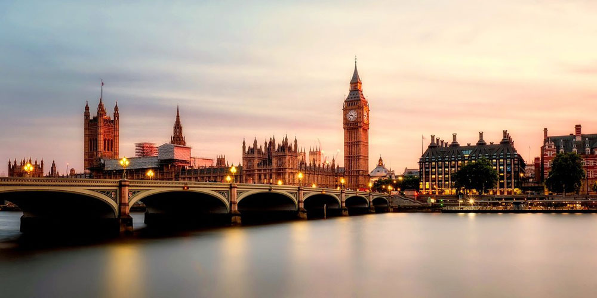
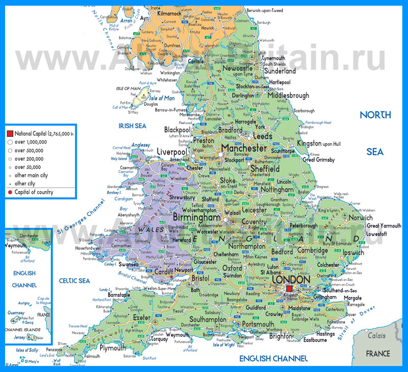

Крупнейшие города:
Лондон
Бирмингем
Лидс
Глазго
Ливерпуль
Манчестер
Белфаст
Эдинбург
Официальные языки:
Территория:
78-я в мире
Всего - 243 809 км²
% водной поверхности - 1,34%
Население:
Оценка (2013) - 63 395 574 чел.
Плотность - 246 чел./км²
Названия жителей:
Англичанин
Англичанка
Англичане
Валюта:
Фунт стерлингов (GPB)
Соединенное королевство было образовано в одна тысяча восемьсот первом году. На тот момент в его состав входили Англия, Уэльс, Шотландия и вся территория Ирландии. В двадцать первом году Южная Ирландия покинула состав унии. Союз англичан, шотландцев и уэльсцев известен во всем мире, как «Великобритания».
Первые документальные упоминания Великобритании датируются пятьдесят пятым годом до начала нашей эры. Именно тогда на территорию острова вторглись племена римлян. Им удалось подчинить себе всю территорию острова, кроме его самых северных районов. С римлянами на территорию Великобритании попало христианство, и были заложены и построены многие города. В пятом столетии, когда империя римлян пала, Великобританию захватили англы и саксы, пришедшие из территорий современной Германии, а свое государство они назвали Англией. Викинги Скандинавии периодически нападали на восточные и северные области Англии. Шотландия и Уэльс в то время продолжали оставаться под властью кельтских племен. В шестьдесят шестом году одиннадцатого столетия к власти в Англии пришли норманны – племена викингов, подчинивших себе Северную Францию.
На протяжении средних веков Англия довольно часто вела войны с соседями, но в середине шестнадцатого века заключила союз с Уэльсом, а в седьмом году восемнадцатого века к ним присоединилась Шотландия и была образована Великобритания. В том же столетии государство стало занимать позиции мощнейшей морской империи. В восемнадцатом столетии страна перешла от аграрного производства к более прогрессивному промышленному. Не смотря на то, что Великобритания сыграла далеко не последнюю роль в обеих мировых войнах, влияние ее на мировую политику, несомненно, в прошлом веке заметно ослабло. К шестидесятым годам большая часть британских колоний обрели независимость, и в семьдесят третьем году Великобритания вступила в Европейский союз.
В шестидесятых и восьмидесятых годах прошлого века страна переживала экономический спад, в результате которого внешняя и внутренняя политика страны значительно поменялась. Многое для британцев было сделано первой женщиной, занявшей пост премьер-министра страны – знаменитой на весь мир Маргарет Тэтчер. В наше время бывшая когда-то морской сверхдержавой Великобритания строит свою экономику, по большей части, на сфере услуг – туризме, финансовых, образовательных, консультационных и банковских услугах.
Чертами сегодняшней Великобритании можно назвать попытки возродить хорошо развитые ранее промышленность и науку, сместить власть от центра к провинции, пропаганду моральных ценностей и, конечно же, верность знаменитым британским традициям.

Крючкова Вера. IVKHK 2018